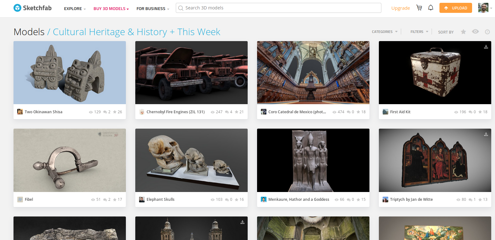

FOTOGRAMETRIA E PATRIMÓNIO
Oficina de formação
Coleção arqueológica José Coelho | maio/julho 2019 | Casa do Miradouro, Viseu.
INTRODUÇÃO À UTILIZAÇÃO DA FOTOGRAMETRIA DIGITAL NA ÁREA DO PATRIMÓNIO
INTRODUÇÃO
CAPTURA
CRIAÇÃO 3D
EDIÇÃO 3D
APRESENTAÇÃO E DIFUSÃO
Ao trabalho!
INTRODUÇÃO
À FOTOGRAMETRIA E PATRIMÓNIO
- História e fundamentos da fotogrametria
- Utilidade da fotogrametria para a documentação, análise, reconstrução, preservação, difusão/divulgação do património
Fotogrametria é a ciência-técnica-arte de fazer medições (dimensões, formas e posições de objetos e ambientes) a partir de fotografias.
...analógica, analítica ou digital; aérea, terreste/curta-distância (Close-Range); estereofotogrametria; videogrametria; cartográfica/mapping ou não-cartográfica (biomecânica, videojogos, vfx, património, etc.); ...
Finais do XV: Leonardo da Vinci desenvolve conceito de perspetiva
1858: A. Laussedat testa fotogrametria aérea com papagaio (e com balões em 1862)
1889: Carl Koppe publica primeiro manual de fotogrametria.
câmara fotográfica + avião + computador
fotografias aéreas; mosaicos; ortofotografias; ortofotomosaicos e ortofotocartas; mosaicos de imagens de radar; cartas planimétricas; cartas topográficas; modelo digital do terreno (DTM); etc.

E Património?
Registo de objetos e ambientes para diferentes fins: documentação, análise, reconstrução, preservação, difusão/divulgação do património.
SS Thistlegorm (WW2)
Arte rupestre na Galiza (Campo Lameiro)
Anta do Repilau (Lobagueira)
Estátua do D. Duarte
Outras iniciativas e projetos
Fotogrametria digital de curta-distância (-300m), terrestre, para reconstrução 3D de objetos através de processo SfM-MVS (Structure from Motion + Multi-View Stereo) com software Open Source (Meshroom)
| Vantagens | Limites |
|
|
Free/Libre & Open Source
SOFTWARE
OPEN FORMATS & STANDARDS
OPEN DATA
OPEN ACCESS

CAPTURA
DE DADOS
- Estratégias de captura para diferentes situações
- Recomendações para levantamento fotogramétrico
Recomendações
ISO baixo, Velocidade alta e pouca abertura (acima de f8.0)
Boa focagem e fixa (tripé e prime lens)
Sobrepor 2/3 (50%-80%) mas não repetir
Evitar luz solar direta (hard shadows)
Iluminação similar (rapidez na captura)
Boa textura
Sem movimentos, brilhos/reflexos, transparências
CRIAÇÃO
DO MODELO 3D
- Processo fotogramétrico: etapas e sequência
- Softwares
Meshroom!
Proprietários: RealityCapture (mín. 99USD/3 meses), Agisoft Metashape (mín. 179USD), 3DF Zephyr (mín. 150Euros), etc.
Open Source e Free: Colmap, Meshroom, MicMac, Regard3D, VisualSFM, OpenMVG, etc.
Qualidade, permite aerial e Close-range, FULL PIPELINE, Windows e Linux, Desenvolvimento forte, versátil.
Problemas? rapidez podia ser maior, máscaras.
EDIÇÃO
DO MODELO 3D
- Operações básicas de edição
- Algumas opções otimização
Limpar-corrigir a malha e texturas
Otimizar para diferentes fins: Retopology, Lowpoly, criar UVs, etc.
APRESENTAÇÃO
E DIFUSÃO DOS RESULTADOS
- Soluções para visualização de modelos 3D
- RV/AR, videojogos e impressão 3D
Sketchfab
Comunidade, serviço, repositório, mercado.
RV/AR
Ao trabalho!
- Parede
- Pote
- Potes grandes
- Pedra mó
- Ara
ABC do Meshroom
- “File > Save As…”
- Importar imagens
- Start (ou Compute 1 a 1)
- Esperar..........
- Problemas!!!!
Erros e Dicas
- No Camera Instrinsic Parameters
- StructureFromMotion falha/mau
- Resultado com muitos "buracos"
- Acelerar DepthMap
- Meshing crash ou lento
- Melhorar resolução da textura
- Low Poly e Draft Mesh
- Masks
No Camera Instrinsic Parameters, Sensor width doesn't exist in the database
- Adicionar em cameraSensors.db (/aliceVision/share/aliceVision)
- CameraBrand;CameraModel;SensorWidth_mm
- Exemplo (https://www.devicespecifications.com/en/model/a95e3ed6): Google;Google Pixel XL;6.25
- https://www.digicamdb.com/ OU https://www.devicespecifications.com/
StructureFromMotion falha ou mau
Provavelmente, foram extraídos poucos features. Para aumentar a qualidade no alinhamento, SfM, Sparse Cloud:
- FeatureExtraction: Describer Preset em High ou Ultra.
- Adicionar AKAZE em FeatureExtraction, FeatureMatching and StructureFromMotion
- FeatureMatching: ativar Guided Matching
Vai demorar mais tempo!
Resultado com muitos "buracos"
- Talvez o Input seja pouco denso ou demasiado desfocado...
- No DepthMapFilter reduzir Min Consistent Cameras para 2 e Min Consistent Cameras Bad Similarity para 3
- No MeshFiltering ajustar Filter Large Triangles Factor
Acelerar DepthMap
- Aumentar o Downscale (mas reduz qualidade!)
- Reduzir SGM: Nb Neighbour Cameras e Refine: Nb Neighbour Cameras reduz tempo linearmente (reduzir 10 para 5 corta tempo em metade). 3 é o mínimo necessário, 4 é suficiente em muitos casos. Default é para ambientes amplos (onde difícil ter 4 imagens que cubram mesma área)
Meshing crash ou lento
- Reduzir maxPoints (1000000 e ir subindo) no Meshing.
Melhorar resolução da textura
- No Texturing, reduzir Downscale para 1 (vai demorar mais!)
Versão low-poly PT1 - Decimate
- Criar uma versão mais leve a partir da original e depois retexturizar.

Versão low-poly PT2 - Retopology

- É possível utilizar programa externo (Blender, InstantMeshes, etc.) mas NÃO alterar escala e orientação!
Draft Mesh OU sem CUDA GPU

- Usar Describer Preset em High ou Ultra no FeatureExtraction
- PrepareDenseScene.input ⇒ Meshing.input
- PrepareDenseScene.output ⇒ Texturing.inputImagesFolder
Masks
Ups... Keep calm and...
- Roadmap
- Fundo sem "features"
ABC do Colmap
- “File > Save As…”
- Reconstruction > Automatic Reconstruction
- Esperar..........
- Problemas!!!!